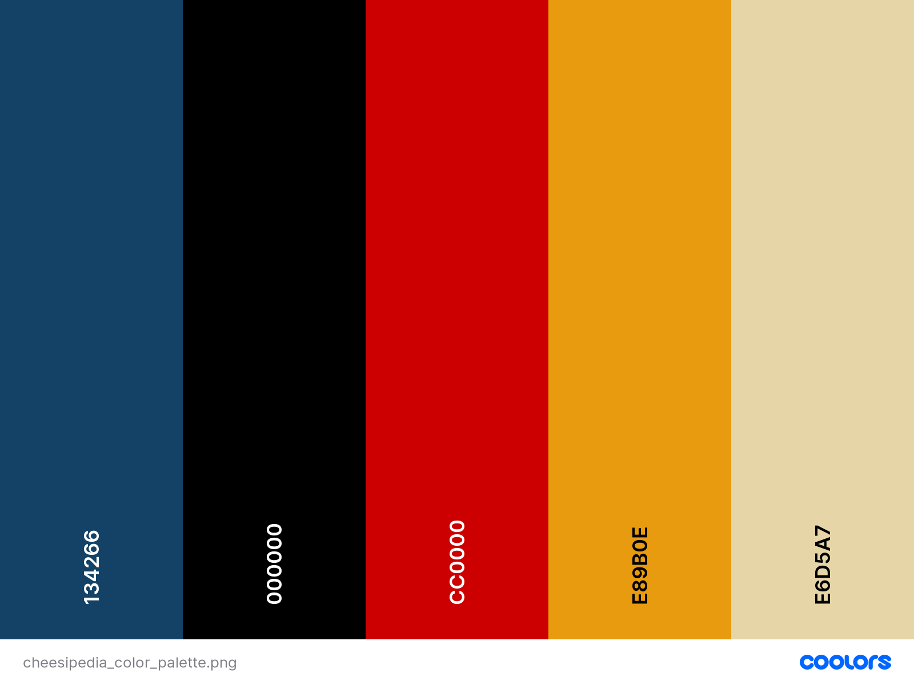

Plans for the site
This Site will be called Cheesipedia with a url of cheesipedia.org
I will register a nonprofit called the National Institute of Cheeses in order to run this website and make this the nation's main source of all cheese information.
This will be kind of like an encyclopedia about cheese with an entry for every type of chees that exists and all information about that cheese that I can find.
Who is this site aimed towards?
This site is intended for any person that is looking to learn more about cheese, is a cheese lover, or would like to research about cheese.
Color Scheme and Font Type
Below you can find the color scheme that I want to use on this website. The color scheme is designed to remind you of chees as you look at it. The yellows are typical cheese colors and the red should remind you of the cheese wheels that have the red rind.
I want to use the font of Cooper Black throughout the website due to it looking nice and being easy to read.
